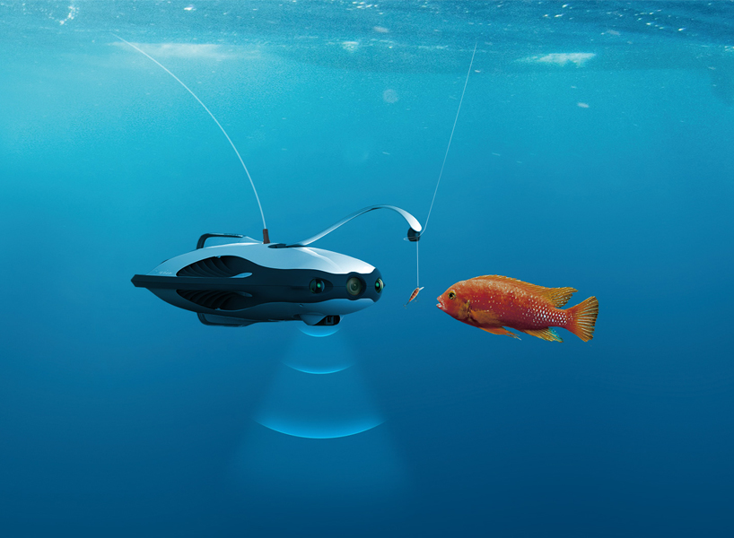

Top Underwater Experiences in Sri Lanka
Explore Sri Lanka’s best snorkeling and diving spots. Search, sort, and browse on any screen size.
| Photo | Place | Best For | Highlights | Season | Map |
|---|---|---|---|---|---|
 |
Pigeon Island (Trincomalee) | Snorkeling | Coral reefs, blacktip reef sharks, colorful reef fish | May to September | Open |
 |
Bar Reef (Kalpitiya) | Snorkeling & Diving | Largest coral reef, dolphins, manta rays | November to April | Open |
 |
Hikkaduwa Marine Park | Snorkeling & Boat rides | Rich coral life, sea turtles, parrotfish | November to April | Open |
 |
Unawatuna & Galle | Scuba Diving | Shipwrecks, coral gardens, reef fish | November to April | Open |
|  | Taprobane North Wreck (Colombo) | Wreck Diving | WWII sunken ship, marine life | November to April | Open |
 |
Mirissa | Snorkeling & Whale Watching | Turtles, dolphins | November to April | Open |
 |
Batticaloa Shipwrecks | Wreck Diving | Sunken ships, marine biodiversity | May to September | Open |
 |
Passikudah | Beginner Snorkeling | Shallow coral gardens, calm water | May to September | Open |